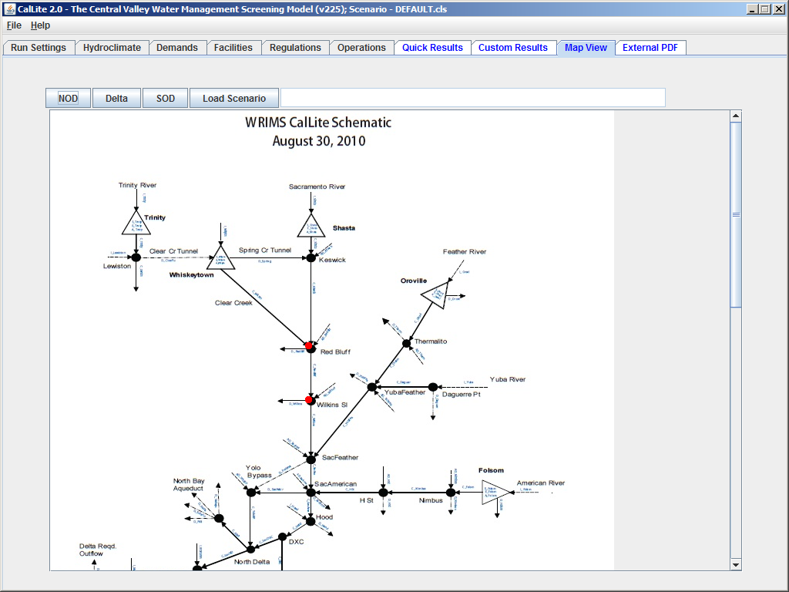

The Map View dashboard can be used to view the CalLite study results according to location on the CalLite schematic. Here, the user can display time series plots from studies loaded in the Quick Results by clicking on the arcs, nodes, and storages. To zoom in hold the ctrl key and draw a box over the area to be enlarged. An alternative way to zoom in and out is to hold down shift and right click simultaneously and then move the mouse forward and back. To pan across the schematic, hold down the shift key and click and drag anywhere in the window.
